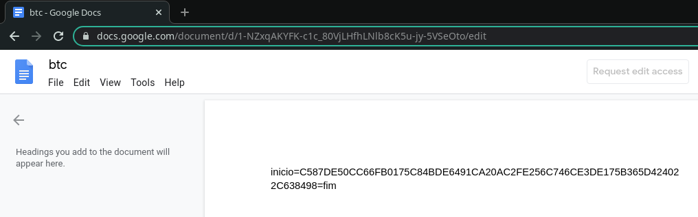

Falsas faturas com ficheiros .msi - malware bancário utiliza gdocs para resiliência
Fui recentemente alertado (obrigado Anubisnetworks!) para uma campanha de email em progresso que envia em anexo (ou através de um link) um ficheiro .msi dentro de um arquivo (.zip ou .bz2) sob o falso pretexto de uma fatura a pagamento, como se pode ver na imagem seguinte:
Numa primeira análise é evidente que se trata de malware. Tanto pelo conteúdo suspeito dos emails, como pelo ainda mais suspeito ficheiro anexo com extensão .msi. No entanto, qual a motivação por trás destas campanhas? e quais as capacidades e sofisticação do malware utilizado?
Análise do malware⌗
Num primeiro passo, recorrendo a uma sandbox online, é possível sem esforço recolher alguma informação sobre o malware (Virustotal, Hybrid analisys, Joe Sandbox). Resumidamente, observa-se que se trata de um malware que recorre a muitas medidas de auto-proteção para evitar a sua análise e que, após comunicar com um site do Google, a sample inicial escreve um ficheiro na pasta de startup applications do windows e executa-o.
Infelizmente, a familia não parece ser conhecida por antivirus, que detetam apenas algumas famílias genéricas ou erradas e não são visíveis elementos que revelem mais sobre as capacidades e objetivos deste malware. Isto deve-se às medidas anti-analise implementadas e em particular à ofuscação de todas as strings no interior do malware, estando estas presentes em memória apenas temporáriamente e quando necessário.
Para não tornar este post demasiado extenso, decidi não entrar em detalhes sobre o processo de reversing ou as técnicas utilizadas para contornar os diversos mecanismos de proteção e ofuscação utilizados. Penso que esses tópicos serão interessantes em posts individuais que permitam explicar melhor cada uma das técnicas. Assim, segue-se o resultado da análise do malware.
Instalação⌗
- O utilizador faz download de um ficheiro que recebeu via email:
- O utilizador extrai o ficheiro .msi do arquivo e executa-o;
- O ficheiro .msi (O downloader) faz download do malware a partir de um domínio do google sites e grava-o na pasta de startup applications. Assegurando desta forma que o malware será executado sempre que o utilizador fizer login no sistema;
- O ficheiro .msi inicia o processo do malware, que por sua vez comunica com o google docs para ler o conteúdo de 3 documentos distintos. Estes documentos contêm a configuração de dois endereços de C2 e de um endereço Bitcoin;
- O malware fica em execução monitorizando as ações do utilizador e solicitando periodicamente comandos ao servidor de comando e controlo.
Recurso ao google docs para configurar e alterar C2⌗
Possivelmente o aspeto mais interessante deste malware é a utilização do Google docs para configurar endereço do servidor de Comando e Controlo (C2). Este sistema aumenta consideravelmente a resiliência do malware a pedidos de desativação do site por parte de equipas de segurança e das autoridades, uma vez que caso o C2 seja desativado, os atacantes terão apenas que alterar o google docs para os bots passem a usar um novo endereço C2.
O malware contem 3 links para documentos do google. Um dos quais é utilizado para configurar um endereço bitcoin e dois para configurar os endereços de C2, que se apresentam de seguida:
Os URLs do google docs, tal como as outras strings críticas, estão ofuscados e são desobfuscados e armazenados numa variável global durante o processo de inicialização. Depois de obtido o URL, é chamada uma função responsável por ler o documento google docs e extrair o conteúdo entre as strings “inicio=” e “=fim”. Esse conteúdo è finalmente passado a uma função que o decifra e posteriormente é guardado numa variável global que armazena o endereço de C2.
O código seguinte é uma reimplementação em python do código usado para decifrar as strings provenientes de documentos do google:
Overlays especificamente construidos para alguns bancos⌗
A função principal deste malware é a de roubar credenciais bancárias de forma a permitir aos atacantes realizar transferências fraudulentas. Para o fazer, o malware apresenta um “popup” sobre todas as janelas do ecrã quando o utilizador visita o site de um dos bancos alvo.
Este popup aparenta ser algo despoletado pelo site do banco e impede a utilização do computador temporáriamente enquanto é solicitada informação. Isto permite que os atacantes realizem transferências fraudulentas, contornando mecanismos de autenticação como o cartão matriz e o código SMS, utilizando os dados que são solicitados ao utilizador em tempo real. As imagens seguintes foram extraídas do malware, mostrando alguns dos “popups” que são apresentados às vítimas:
Ataques a utilizadores de Bitcoin:⌗
Para além da componente de ataque a utilizadores de banca online, este malware contem diversas strings A presença destas strings que sugerem que o atacante tem como alvo utilizadores de bitcoin e de algumas wallets e exchanges em particular. As seguintes strings from encontradas no malware apos desobfuscação com recurso a um script de disassembler:
ELECTRUM, FOXBIT, BITCOIN, BLOCKCHAIN, EXCHANGE, WALLET, LIQUIDEX
Para além das strings, existe um endereço bitcoin configurado através de um documento Google Docs, com recurso ao mesmo sistema que é utilizado para fazer update aos servidores de C2.

Este endereço, no entanto, não aparenta ser muito utilizado. A ultima transação data de Janeiro de 2020 e o total movimentado foram cerca de 56 USD.
Outras features⌗
Para alem das features acima descritas, o malware tem ainda várias outras features, tais como:
- Keylogger;
- Recolha de dados sobre o sistema;
- Apresentação de imagens em overlay (sobre todas as janelas do ecrã);
- Execução de comandos remotos;
- Desativação de módulos de software de segurança de bancos (e.g. Trusteer), de antivirus e de updates do sistema;
- Leitura de passwords gravadas no browser;
- Captura de imagens do ecrã remoto;
- Reiniciar o PC;
- Apagar o PC;
Conclusão⌗
Este tipo de malware bancário (overlay malware em delphi), é comum em portugal ha diversos anos. No entanto, a utilização de google docs como forma de configurar os C2 aumenta consideravelmente a resiliência da botnet. De pouco serve desativar o C2 desta botnet sem primeiro desativar os documentos do google que permitem altera-lo. Documentos esses que facilmente passam despercebidos numa analise rápida do malware, já que este usa diversas metodologias para dificultar a sua analise.
IOC (Indicadores de Compromisso)⌗
Sample utilizada: 4789008a513930aa7459fca302e0ecaf2e10ded11b6e7a6768ea249324f051e4
:: ::